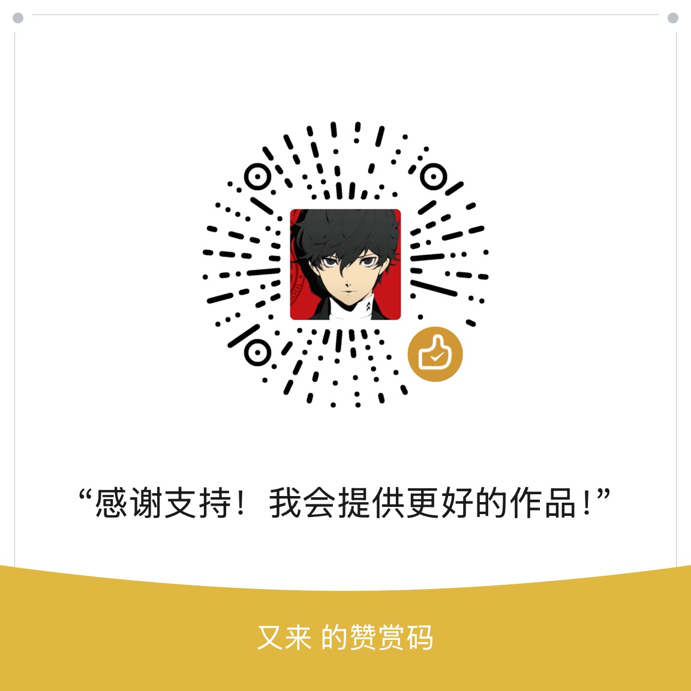

设置
AI 模型配置
DeepSeek 默认为 deepseek-chat
默认使用官方免费加速通道，无需配置 Key。
书签偏好
控制 AI 创建新文件夹的倾向程度。
外观设置
书签备份
把手动备份直接存到扩展本地，并支持 HTML 导入和导出。
导入时会先自动创建一份安全备份，再把内容导入到书签栏下的新文件夹。
还没有备份记录
屏蔽管理
以下网站不会显示悬浮收藏按钮。
暂无屏蔽的网站
历史收藏记录
暂无历史记录
使用统计
AI 分类次数
0
每次发起分类请求计 1 次（失败也计数）
AI 重命名次数
0
仅实际发生标题变化的条目计数
检测失效数量
0
疑似失效条目累计，与是否删除无关
问题反馈
如果在使用过程中遇到问题，欢迎通过下面的邮箱反馈。
常见问题
为什么分类不够准确？
- 尽量在正文完整、信息充分的页面上使用
- 调整“允许 AI 创建新文件夹”和对应策略
- 检查模型和 API 配置是否正确
为什么找不到刚收藏的书签？
- 可以到“书签树”或管理页中查看完整层级
- 也可以在“历史记录”里快速打开最近收藏项目
为什么悬浮按钮没有出现？
- 检查设置中是否开启了“显示悬浮智能收藏按钮”
- 某些网站可能已被加入隐藏列表
如何无限量批量处理书签？
- 由于 AI 模型成本问题，您可以配置自己的 AI 模型（如 DeepSeek API）来获得无限次数
关于隐私安全
- 我们仅提取必要的网页信息用于 AI 分类，不会收集您的个人数据
- 查看隐私策略文档
支持作者
如果这个插件对你有帮助，欢迎打赏支持继续迭代。
